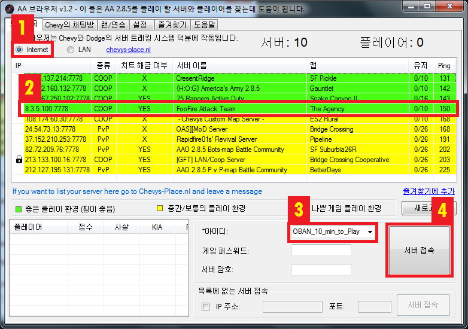

도움말: AA 브라우저 (1.2.1 버전)
소프트웨어 설정
플레이 할 서버 선택
서버 접속
목록에 없는 서버 접속
DCDS를 이용해 맵을 다운로드 할 수 없는 경우
랜/연습
브라우저를 통해서 생성된 서버에 접속
게임 브라우저를 통한 서버 접속
명령 프롬프트(CMD) 기능을 이용한 서버 구동
인터넷을 사용한 서버 생성 (집
인터넷을 사용)
유동 IP 서버
고정 IP 서버
포트의 고려 사항
게임 해상도 변경
시야각(FOV) 변경
소프트웨어 설정
유일한 설정 방법은 'ArmyOps.exe' 파일의 경로를 설정하는것입니다. 'ArmyOps.exe' 파일은 게임 설치
디렉터리의 '시스템 폴더'에 있습니다.
당신은 언어를 설정하실 수 있습니다. 현재까지는 '영어', '스페인어', '독일어', '네덜란드어' 그리고 '한국어'가
지원됩니다.
'설정 저장' 버튼을 눌러서 변경 내용을 저장하시는것을 잊지 마십시오.
포트가 혼잡한 상황이 아닌 이상 'UDP' 포트를 변경하실 필요는 없습니다.
당신은 게임 해상도를 설정하실 수 있습니다. 옵션은 전체 화면과 창모드가 있습니다.
플
레이 할 서버 선택
서버를 선택하실 경우 먼저 '핑(Ping)'을 보셔야 합니다. 핑이
높은 경우 플레이 할때 렉이 많이 발생할 수 있습니다. 핑이 낮은 서버를 선택하시는것을 권장합니다.
좋은 게임 플레이를 위해서 초록색으로 나타난 서버 중에 핑이 가장 낮은 서버를 선택하시는것을 추천드립니다.
노란색 혹은 빨간색으로 뜬 서버는 당신이 직접 플레이의 원활함을 확인해보셔야 합니다. (얼마나 많은 렉이 발생할지를 확인해보셔야
합니다.)
정보: 초록색으로 나타난 서버는 핑이 '150' 이하이며, 노란색으로 나타난 서버는 '150' 에서 '250' 사이, 빨간색으로
나타난 서버는 '250' 이상의 핑을 가지고 있다는 뜻입니다.
서버 접속
서
버 접속은 사진에 나와있는것 처럼 따라하시면 됩니다. 먼저 옵션이 'Internet' 으로 선택되었는지 확인해주세요.(1)
그리고 목록에서 서버를 선택하세요.(2) 다음으로 아이디(Unsername)을 입력해주세요. 마지막으로 서버 접속(Join
Server) 버튼을 눌러주시면 됩니다.

만약 '관리자'(Player Administrator)로 서버에 접속하시고 싶으시다면 '관리자 암호'(Player Admin
Password)를 입력하세요.
왼쪽에 '자물쇠 기호'가 붙은 서버는 암호가 걸린 서버이며, 접속하시고 싶으실 경우 '게임 패스워드'(Game
password)에다가 암호를 입력하세요.
목록
에 없는 서버 접속
만약 목록에 없는 서버와 그 서버의 IP 주소 그리고 포트를 알고 있으실 경우 사진속의 박스를 클릭해서 체크를 해주신 다음 IP
주소와 포트를 입력하신 후 서버 접속을 누르시면 서버 접속이 됩니다.
DCDS
를 이용해 맵을 다운로드 할 수 없는 경우
서
버를 접속하시다가 사진과 같은 메시지를 볼 수도 있습니다. 당신의 게임에 해당 맵이 없거나 게임이 가지고 있는 버전의 맵 하고
서버에서 가동중인 맵하고 서로 다른 버전의 맵이라는 뜻입니다. 이럴때는 맵을 다운로드 한 다음 게임 디렉터리의 Maps 폴더에
복사해주셔야 합니다.
랜/연습
이 부분은 '로컬 서버'를 당신의 PC에서 생성할 수 있게 해줍니다. 혼자서 맵을 구경해보거나 랜 서버에서 친구들과 함께 플레이
할 수 있게 해줍니다.
로컬 서버를 생성할 때 서버 상태 부분에서 사진과 같이 "Completed Loading" 이라고 뜰겁니다. 이것이 뜰 경우
서버에선 로딩이 완료되었으며 접속이 가능하다는 뜻입니다.
서버 접속 방법은 두가지인데 브라우저 혹은 게임을 통해서 하는게 있습니다.
브
라우저를 통해서 생성된 서버에 접속
서버 로딩이 끝났다면 '브라우저'탭에서 'LAN'을 선택하세요(1). 그 다음 서버를 선택한 후(2) 아이디를 입력합니다(3).
그리고 마지막에는 '서버 접속' 버튼을 눌러주시면 됩니다(4).
게임 브라우저를 통한 서버 접속
'ArmyOps.exe'
파일을 실행시킨 다음 게임에서 사진과 같이 AA BROWSER를 선택합니다. 그 다음 LAN을 선택하면 목록에 서버가 있는것을
보실 수 있습니다. 생선된 서버를 선택한 다음 JOIN SERVER를 클릭하세요.
명령
프롬프트(CMD) 기능을 이용한 서버 구동
사
진과 같이 해당 옵션에 체크를 한 경우, 서버는 명령 프롬프트(CMD)로 생성될겁니다. 그래서 브라우저를 닫아도 서버가 종료되지
않는것입니다. 이 옵션은 서버는 생성하고 싶은데 브라우저를 닫아도 서버를 계속 유지하고 싶을 경우 사용하는겁니다.
정보: 이러한 서버 생성 방식은 랜 서버로만
작동된다는것을 아셔야 합니다. 인터넷을 통한 서버는 작동이 되지 않습니다. 인터넷을 통해서 서버를 생성하고 싶을 경우 몇가지
추가 작업을 해야합니다.
인터넷을 사용한 서버 생성 (집
인터넷을 사용)
인
터넷을 통해서 서버를 생성하기 전에, 당신은 당신이 한 일에 대해서 책임져야 한다는 사실에 대해 알고 있으셔야 합니다.
플레이어가 제대로 작동하는지 그리고 필요할 경우 플레이어간의 순서를 지정할 책임이 있습니다. 또한 서버를 설치하지 않고 브라우저
목록에 나타날 경우 플레이어들이 서버를 사용한다는 뜻이란것을 알고 있어야 합니다. 서버를 사용할려면 게임을 즐기려는 플레이어들을
유치해야합니다. 그 뜻은 당신이 플레이어들을 끌어모아야 한다는 뜻이죠.
주의사항은 여기까지고 이제 시작해보죠.
다음 설명은 인터넷을 통해 만들었고 브라우저에 나타난 서버를 생성한다고 가정합니다. 그리고 서버 생성은 좋은 인터넷 커넥션을
필요로 합니다. 당신의 인터넷 속도는 반드시 최소 '1메가바이트'가 되어야 합니다.(1 Mbit)
첫번째로는 '고정 IP'로 서버를 생성할지 아니면 '유동 IP'로 서버를 생성할지 결정해야합니다. (대부분의 서버는 보통 고정
IP를 많이 사용합니다.)
'고정 IP하고 유동 IP의 차이점은 무엇인가?'
'고정 IP'는 IP 주소가 바뀌지 않으며 '유동 IP'는 모뎀이나 라우터를 끄거나 재시작 할때마다 IP 주소가 바뀝니다.
유동 IP
서버
어
느 유동 IP든지 서버를 개설할때 유동 IP를 사용하는것은 권장되지 않습니다. 왜냐하면 IP 주소가 변경될때 유저들이 서버를 더
이상 사용 못하게 될 수도 있기 때문이죠. 하지만 유동 IP로도 서버 개설이 가능한 인터넷 서비스가 있습니다. 이러한 서비스는
DDNS(Dynamic Domain Name System)라고 부릅니다. 몇몇 회사들은 인터넷으로 해당 서비스를 무료로
제공하기도 합니다.
DDNS를 사용할 경우 기본적으로 당신은 도메인 이름을 획득하게 됩니다. (예시:
your_domain.ddns.net) 당신의 도메인 이름을 업데이트된 IP 주소에 항상 연결하기 위해 유동 IP 주소를
업데이트 하는 프로그램을 PC에 설치해야합니다. 이 방법은 당신의 도메인 이름을 사용하는 다른 사람들이 모뎀이나 IP 주소가
변경되더라도 당신의 서버에 항상 접속할 수 있게 만듭니다.
그래서 첫번째로 당신이 해야 할 일은 DDNS 서비스 요청을 위해 회사를 통해서 도메인 이름을 얻어야 하는겁니다. 이러한 작업의
경우 서비스 제공을 하는 회사의 설명을 따라야 합니다.
두
번째는 서버를 온라인 상태로 만들기 위해서 당신이 쓸 모뎀 즉, 포트로 보낼(forward the ports) 모뎀을 준비하는
것 입니다. 이러한 작업의 경우 모뎀의 설명서를 재확인 한 후 어떻게 포트를 전송시킬지 봐야합니다. AA 서버로 전송할 포트는
다음과 같습니다. UDP 1716, UDP 1717 그리고 UDP 7778입니다.
포트 전송 설정을 올바르게
완료하였다면 당신의 서버를 가동할 준비가 된겁니다. 서버를 가동할려면 랜/연습 탭에 들어가 서버를 생성해야합니다. 실수로
브라우저를 종료시켜서 서버가 닫히는 일을 만들지 않기 위해 '이 서버는 명령 프롬프트(cmd)로 실행됩니다' 를 체크해두시는
것을 권장합니다. 서버가 온라인 상태인지 테스트 해볼려고 하는 경우 아무나한테 목록에 올라와 있지 않은 서버를 접속해달라고
부탁하는 방법이 있습니다. 여기서 잊지 마셔야 하는것이 테스트를 해야할 경우 당신의 모뎀과 포트 1716의 IP 주소를
알려줘야합니다.
마지막으로 해야할 것은 브라우저에서 서버가 목록에 뜨게 만들어야합니다. 이러한 작업의 경우 Chevy's Place에서 들어간
다음 당신의 서버를 추적할 수 있도록 그쪽 사람들에게 요청하는 것 입니다.
중요사항: Chevy's Place에선 항시 온라인 상태인 서버만 추척하며 당신의 서버가 거의 매일 오프라인인 상태라면 서버
추적을 끊을것이며 브라우저에 더 이상 뜨지 않을 것 입니다.
Chevy's Place가 서버를 추적하기 위해 당신이 알려줘야 할 자료는 다음과 같습니다.
- 당신의 서버 이름 (브라우저로 서버를 만들 때 입력한 이름)
- 당신의 도메인 이름 (DDNS 공급자로부터 얻은 그 이름)
- 게임 포트(game port) 1716
- 쿼리 포트(Query port) 7778
고정 IP
서버
서
버를 온라인 상태로 만들기 위해서 당신이 쓸 모뎀 즉, 포트로 보낼(forward the ports) 모뎀을 준비하는 것
입니다. 이러한 작업의 경우 모뎀의 설명서를 재확인 한 후 어떻게 포트를 전송시킬지 봐야합니다. AA 서버로 전송할 포트는
다음과 같습니다. UDP 1716, UDP 1717 그리고 UDP 7778입니다.
포트 전송 설정을 올바르게
완료하였다면 당신의 서버를 가동할 준비가 된겁니다. 서버를 가동할려면 랜/연습 탭에 들어가 서버를 생성해야합니다. 실수로
브라우저를 종료시켜서 서버가 닫히는 일을 만들지 않기 위해 '이 서버는 명령 프롬프트(cmd)로 실행됩니다' 를 체크해두시는
것을 권장합니다. 서버가 온라인 상태인지 테스트 해볼려고 하는 경우 아무나한테 목록에 올라와 있지 않은 서버를 접속해달라고
부탁하는 방법이 있습니다. 여기서 잊지 마셔야 하는것이 테스트를 해야할 경우 당신의 모뎀과 포트 1716의 IP 주소를
알려줘야합니다.
마지막으로 해야할 것은 브라우저에서 서버가 목록에 뜨게 만들어야합니다. 이러한 작업의 경우 Chevy's Place에서 들어간
다음 당신의 서버를 추적할 수 있도록 그쪽 사람들에게 요청하는 것 입니다.
중요사항: Chevy's Place에선 항시 온라인 상태인 서버만 추척하며 당신의 서버가 거의 매일 오프라인인 상태라면 서버
추적을 끊을것이며 브라우저에 더 이상 뜨지 않을 것 입니다.
- 당신의 서버 이름 (브라우저로 서버를 만들 때 입력한 이름)
- 모뎀의 공인 IP (external IP)
- 게임 포트(game port) 1716
- 쿼리 포트(Query port) 7778
포트의 고려
사항
포트 1716
이
포트는 필요한 경우 변경할 수 있는 포트입니다. 이 포트를 변경하려면 게임이 설치된 디렉터리의 'System' 폴더 내에 있는
'server' 라는 이름의 ini 파일을 엽니다. 그 후 [URL] 부분에 있는 Port=1716을 수정합니다. 잊지
마십시오. 만약 포트를 변경했다면 반드시 모뎀으로 전송(forwarding) 해야됩니다.
포트 7778
이 포트는 쿼리 포트(query port)이며 사용자가 수정할 수 없습니다. 만약 이 포트가 혼잡할 경우 서버에서 자동으로 덜
혼잡한 다음 포트를 사용할 것 입니다.
중요사항: 브라우저 리스트에 서버를 뜨게 하기 위해선 서버가 UDP 포트 7778을 쿼리 포트로 사용해야하며 그렇게 하지 않을
경우 서버가 브라우저 리스트에 뜨지 않습니다.
게임 해상도 변경
게임 해상도를 변경할 경우 브라우저 내의 설정 탭을 통해서도 변경할 수 있지만 ArmyOps.ini 파일을 아래에 있는 사진과
같이 변경해서도 할 수 있습니다.
만약 원하는 해상도로 변경이 불가능할 경우 게임이 설치된 디렉터리에 System 폴더 내에서 ArmyOps.ini 파일을 연
다음 스크린 해상도를 변경할 수 있습니다.
ArmyOps.ini 파일에선 사진과 같이 [WinDrv.WindowsClient] 부분에서 변경할 수 있습니다. 그리고
저장하는걸 꼭 잊지 마세요.
정
보: 게임의 기본 화면 비율은 4:3입니다. 만약 화면 비율을 16:9 혹은 16:10으로 하면서도 화면 해상도를 변경할려고
하는 경우 시야각(FOV, Field of View)을 변경하시는것을 추천합니다. 이렇게 변경을 하시는게 귀찮으실지는 몰라도
4:3 화면비 보다 더 좋은 화면비로 플레이를 하길 원하실 경우 하시는것을 추천합니다.
시
야각(FOV) 변경
시야각(FOV)을 변경하려면 설치된 게임 디렉터리의 System 폴더에 있는 User.ini 파일을 열어야 합니다.
User.ini 파일을 열었을 경우 [Engine.PlayerController] 파트에 해당 내용들을 찾습니다:
DesiredFOV=90.000000
DefaultFOV=90.000000
원하는 FOV 값을 선택하십시오. 저는 90도의 경우 4:3 화면비를, 100의 경우 16:10의 화면비를 그리고 105의 경우
16:9 화면비를 선택하는것을 전 권장합니다. 물론 저장하는것도 잊지 마십시오.
정보: 저의 경험에 따르면 FOV는 몇몇 컴퓨터의 경우 변경되지 않을 수 있습니다. 제가 보기에는 그래픽 카드에 따라 다른것으로
보입니다.
Translator's email address:
wellord3@gmail.com
번역자의 이메일 주소: wellord3@gmail.com